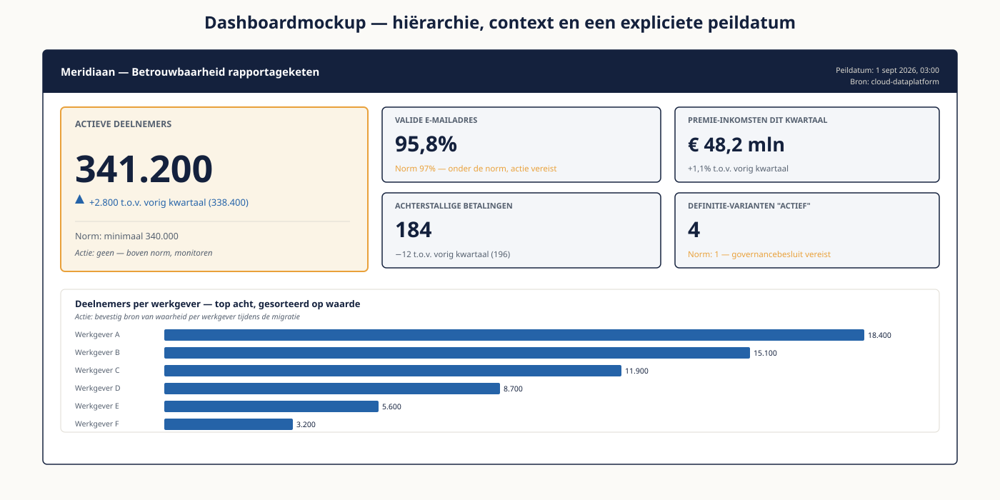

Deel 6 — Visualisatie en storytelling
Niveau 1 — Fundament · Reader
Voorbereiding, geen vervanging
Deze cursusmap is onafhankelijk ontwikkeld door Ductus B.V. Ductus is niet gelieerd aan, geaccrediteerd door of goedgekeurd door DAMA International, IIBA, IAPP, de EDM Association of Microsoft.
Dit materiaal bereidt voor op de genoemde examens en vervangt het officiële examenmateriaal niet. Bodies of knowledge, handboeken en examenblueprints worden hier niet gereproduceerd; deelnemers schaffen die bronnen zelf aan.
Alle genoemde merken zijn eigendom van hun respectieve houders. Examengegevens gecontroleerd in augustus 2026 — verifieer vóór inschrijving bij de bron.
1. Waar dit deel over gaat
Een dashboard is geen verzameling grafieken. Het is een antwoord op de vraag: wat moet ik nu weten, en wat doe ik daarmee. Elke grafiek die daar niet aan bijdraagt, maakt het dashboard slechter — ook als hij op zichzelf mooi is.
Dit is het sluitstuk van niveau 1. In deel 3 volgde je het getal door de keten, in deel 4 beoordeelde je of het klopt, in deel 5 haalde je er betekenis uit. Hier maak je die betekenis zichtbaar voor iemand die er iets mee moet. Dat is een ontwerpvak, geen tooltruc — de meeste slechte dashboards zijn technisch foutloos gebouwd.
Leerdoelen
- Je kiest een grafiektype op grond van de vraag, niet op grond van gewoonte of smaak.
- Je herkent de zes manieren waarop een grafiek misleidt, ook wanneer dat onbedoeld gebeurt.
- Je onderscheidt KPI, metric, indicator en streefwaarde en gebruikt ze consequent.
- Je ontwerpt een dashboard dat de vijfsecondentoets doorstaat.
- Je gebruikt kleur functioneel en toegankelijk.
- Je bouwt in Power BI een dashboard met drie KPI’s op een correct semantisch model.
- Je formuleert de kernboodschap in één zin, afgestemd op het publiek.
2. Wat een visualisatie moet doen
Eén visualisatie, één boodschap. Zodra je twee dingen tegelijk wilt laten zien, zegt de grafiek meestal geen van beide overtuigend. En bij elke grafiek hoort een handeling: als het antwoord op "en wat doen we nu?" leeg blijft, hoort de grafiek er niet.
De drie vragen vooraf
- Wie kijkt hiernaar, en met welke voorkennis?
- Welke beslissing of handeling hangt eraan?
- Wat is de vergelijking? Een getal zonder referentie betekent niets — 94 procent is goed of slecht afhankelijk van vorig kwartaal, de norm, of de rest van de sector.
Het meest verwaarloosde element
Context. Een tegel met "341.200 deelnemers" vertelt niets. Diezelfde tegel met "341.200, was 338.400 vorig kwartaal, norm 340.000" vertelt alles. De vergelijking is geen versiering maar de betekenis zelf.
3. Grafiektype kiezen
Kies op de vraag die je stelt, niet op wat er beschikbaar is in het menu.
| Je wilt tonen | Kies | Bij Meridiaan | Vermijd |
|---|---|---|---|
| Vergelijking tussen categorieën | Staafdiagram, horizontaal bij lange labels | Deelnemers per werkgever | Taart bij meer dan drie delen |
| Verloop over tijd | Lijndiagram | Premie-inkomsten per maand | Staven bij veel tijdstappen |
| Samenstelling van een geheel | Gestapelde staaf of treemap | Verdeling over regelingen | Taart bij vergelijking tussen periodes |
| Verdeling van waarden | Histogram of boxplot | Spreiding van aanspraken | Alleen een gemiddelde tonen |
| Verband tussen twee grootheden | Spreidingsdiagram | Leeftijd tegen bijstorting | Twee lijnen op twee assen |
| Eén getal met context | Kaart met referentie en trend | Aantal actieve deelnemers | Een grote meter zonder norm |
Over het taartdiagram bestaat meer dogmatiek dan nodig. Hij werkt bij twee of drie delen die samen een geheel vormen en waarvan de verhoudingen sterk verschillen. Hij faalt zodra er zes segmenten zijn, zodra de verschillen klein zijn, of zodra je twee periodes wilt vergelijken — het menselijk oog schat hoeken slecht, en nog slechter naast elkaar.
4. Hoe een grafiek misleidt
Meestal is misleiding niet opzettelijk. Zes patronen komen zo vaak voor dat je ze standaard controleert, ook in je eigen werk.
| Patroon | Wat er gebeurt | Wanneer wel acceptabel |
|---|---|---|
| Afgeknotte y-as | De as begint niet bij nul, waardoor kleine verschillen groot lijken | Bij een lijndiagram waar de variatie relevant is — mits de as duidelijk gelabeld is |
| Twee y-assen | Twee reeksen met verschillende schalen suggereren samenhang | Vrijwel nooit; gebruik twee grafieken onder elkaar |
| Driedimensionaal | Perspectief vervormt de vergelijking | Nooit |
| Oppervlakte in plaats van lengte | Verdubbelde straal geeft viervoudig oppervlak | Alleen bij correcte schaling op oppervlak |
| Gekozen periode | Het venster begint precies bij een dip | Als de periode inhoudelijk te verantwoorden is |
| Ontbrekende noemer | Absolute aantallen zonder de groep waaruit ze komen | Als de groepen aantoonbaar even groot zijn |
De laatste is bij Meridiaan het meest relevant. "Werkgever A heeft 45 achterstallige betalingen, werkgever B heeft 12" zegt niets zolang A er tienduizend deelnemers heeft en B tweehonderd. De noemer ontbreekt vaker dan alle andere fouten samen.
5. KPI, metric, indicator en streefwaarde
| Begrip | Betekent | Voorbeeld |
|---|---|---|
| Metric | Elke meetbare grootheid | Aantal inlogpogingen op het portaal |
| Indicator | Een metric die iets zegt over iets anders | Portaalgebruik als indicator voor betrokkenheid |
| KPI | Een indicator die aan een doel is gekoppeld en waarop gestuurd wordt | Percentage deelnemers met een valide e-mailadres |
| Streefwaarde | De norm waaraan de KPI wordt afgemeten | Minimaal 97 procent |
Het onderscheid is niet academisch. Een dashboard met vijftien KPI's heeft in werkelijkheid vijftien metrics en geen enkele KPI, want er wordt op niets gestuurd. Een KPI zonder streefwaarde is een metric met een groter lettertype. En een KPI zonder eigenaar — daar kwam deel 4 al langs — wordt netjes getoond en nooit besproken.
Een bruikbaar aantal voor een bestuurlijk dashboard ligt tussen de drie en de zeven. Meer dan dat betekent dat er niet is gekozen, en de lezer kiest dan zelf — meestal de tegel die het beste nieuws brengt.
6. Dashboardontwerp
De vijfsecondentoets
Laat iemand vijf seconden naar je dashboard kijken en vraag daarna wat hij zag. Kan hij de hoofdboodschap niet noemen, dan is het ontwerp niet af. Dit is de goedkoopste kwaliteitscontrole die er is en hij wordt vrijwel nooit gedaan.
Drie ontwerpprincipes
- Hiërarchie. Wat het eerst gelezen moet worden, staat linksboven en is het grootst. De meeste dashboards beginnen linksboven met een filterpaneel, wat betekent dat de belangrijkste plek is weggegeven aan bediening.
- Context. Elk getal krijgt een vergelijking: vorige periode, norm, of andere groep. Zonder vergelijking kan de lezer niet beoordelen of hij moet handelen.
- Actiegerichtheid. Bij elke tegel hoort een denkbare handeling. Kun je die niet benoemen, dan is de tegel informatief maar niet nuttig — en informatief is op een dashboard niet genoeg.
Praktische keuzes
- Eén scherm, geen scrollen. Wat onder de vouw staat, wordt niet gelezen.
- Sorteer op waarde, niet alfabetisch, tenzij de lezer op naam zoekt.
- Rond af tot wat betekenis heeft. 341.217 leest slechter dan 341,2 duizend, tenzij het exacte getal juridische waarde heeft.
- Vermeld peildatum en bron op het dashboard zelf. Dat voorkomt de helft van de vragen — en het is de directe toepassing van deel 3.

7. Kleur
- Gebruik kleur om betekenis te dragen, niet om te versieren. Als vier staven vier verschillende kleuren hebben zonder dat de kleur iets betekent, kost dat aandacht zonder iets op te leveren.
- Houd de betekenis consistent over het hele dashboard. Als rood op de ene tegel "onder de norm" betekent, mag het elders niet "regeling A" betekenen.
- Reserveer verzadigde kleuren voor wat aandacht verdient. Grijs is een keuze, geen gebrek: wie alles benadrukt, benadrukt niets.
- Ongeveer acht procent van de mannen is kleurenblind, meestal voor rood en groen. Vertrouw daarom nooit op kleur alleen — voeg vorm, positie of een label toe.
- Werk binnen de huisstijl van de opdrachtgever. Een dashboard dat afwijkt van de rest van de organisatie wordt gelezen als een persoonlijk project.
8. Power BI in de praktijk
Voor niveau 1 hoef je geen expert te zijn. Vier begrippen bepalen echter of je dashboard klopt, en ze worden alle vier regelmatig fout gebruikt.
| Begrip | Wat het is | Waar het misgaat |
|---|---|---|
| Semantisch model | De tabellen en hun onderlinge relaties in het rapport | Alles in één platte tabel plakken; dan werkt filteren niet meer voorspelbaar |
| Relatie | De koppeling tussen twee tabellen, met richting en kardinaliteit | Veel-op-veel-relaties leggen zonder de koppeltabel uit deel 2 |
| Kolom | Een berekening die per rij wordt vastgelegd bij het inladen | Gebruiken waar een measure hoort; het model wordt groot en star |
| Measure | Een berekening die pas wordt uitgevoerd in de context van de visual | Vergeten dat de uitkomst meebeweegt met filters — dat is juist de bedoeling |
De vuistregel: gebruik een measure tenzij je een waarde nodig hebt om op te filteren of te groeperen. En besteed aandacht aan het model voordat je aan de opmaak begint. Een dashboard op een verkeerd model ziet er prima uit en telt verkeerd — en dat is precies het soort fout waar deel 3 en 5 over gingen.
9. Storytelling
Een dashboard is een instrument; een presentatie is een verhaal. Ze vragen andere vaardigheden en de meeste analisten leveren het eerste terwijl het tweede wordt gevraagd.
De structuur die vrijwel altijd werkt
- Situatie: wat weten we al en zijn we het over eens?
- Complicatie: wat is er veranderd of wat blijkt niet te kloppen?
- Vraag: wat moeten we nu beslissen?
- Antwoord: dit stel ik voor, op grond hiervan.
De ene zin
Schrijf de kernboodschap in één zin op, vóórdat je de eerste grafiek maakt. Lukt dat niet, dan weet je nog niet wat je wilt zeggen en gaat een dashboard dat niet oplossen. Die zin verandert bovendien per publiek: dezelfde bevinding klinkt anders richting de CFO, de domeindirecteur en de klantcontactafdeling — niet in waarheid, wel in wat er relevant aan is.
De toets voor je ene zin
Kan iemand het na jouw zin oneens met je zijn? Zo niet, dan heb je een observatie geformuleerd en geen boodschap. "De datakwaliteit verdient aandacht" is geen boodschap. "We halen de DNB-termijn niet zonder dat het e-mailveld deze maand optioneel wordt" wel.
10. Vijf valkuilen
- Beginnen met bouwen voordat de ene zin op papier staat.
- Een getal tonen zonder vergelijking.
- Vijftien tegels maken omdat er vijftien wensen waren.
- Kleur gebruiken als decoratie in plaats van als betekenis.
- Het dashboard opleveren zonder peildatum en bron erop.
11. Examenrelevantie
Dit deel raakt het kennisgebied Data Warehousing & Business Intelligence op het CDMP Fundamentals-examen. Het examen toetst geen visualisatievaardigheid, maar wel het begrip van BI als functie: waarvoor het bestaat, hoe het zich verhoudt tot het datawarehouse uit deel 3, en welke rollen erbij horen. Voor wie de optionele PL-300 overweegt, zijn het semantische model en het onderscheid tussen kolom en measure de kern.
Aandachtspunten
- BI als functie binnen het datamanagementlandschap, niet als tool.
- De verhouding tussen datawarehouse, semantische laag en rapportage.
- Self-service BI en het bijbehorende governancevraagstuk — dat loopt door naar deel 16.
- Het onderscheid tussen metric, indicator en KPI.
- Engels: semantic layer, self-service BI, dashboard, scorecard, drill-down.
Studiemateriaal bij dit deel
Kernbron: het hoofdstuk over data warehousing and business intelligence in de DAMA-DMBOK2 Revised Edition. Schaf deze zelf aan — tijdens het examen is dit het enige toegestane hulpmiddel, in papier óf digitaal.
Voor wie PL-300 overweegt: de studiegids en leerpaden op learn.microsoft.com. Let op de jaarlijkse verlengingsplicht van Microsoft-certificeringen.
Examenopzet en wegingen: cdmp.info/exams en dama.org/certification.
Dit materiaal reproduceert geen van deze bronnen en vervangt ze niet.